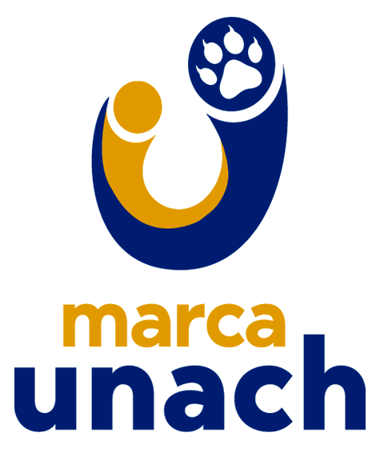
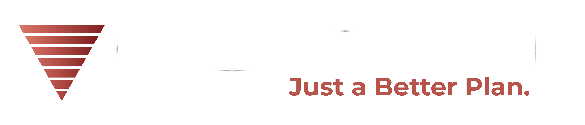
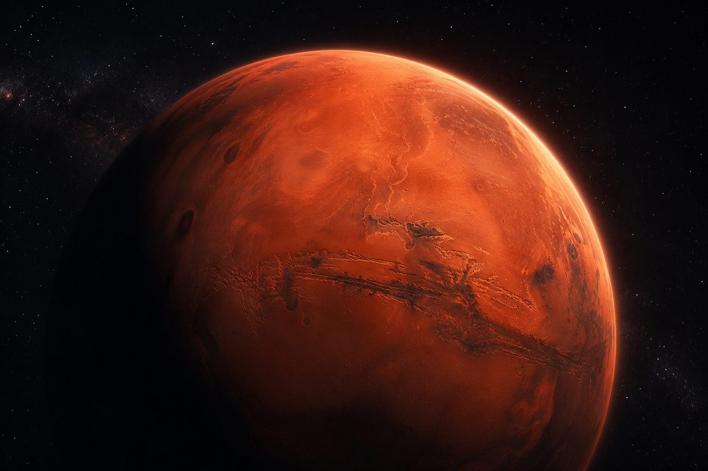
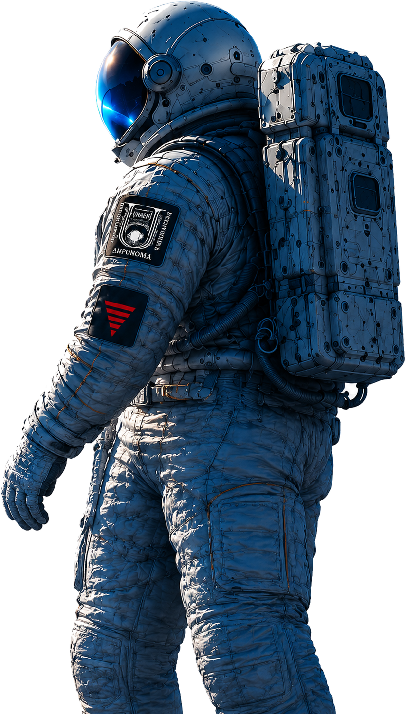
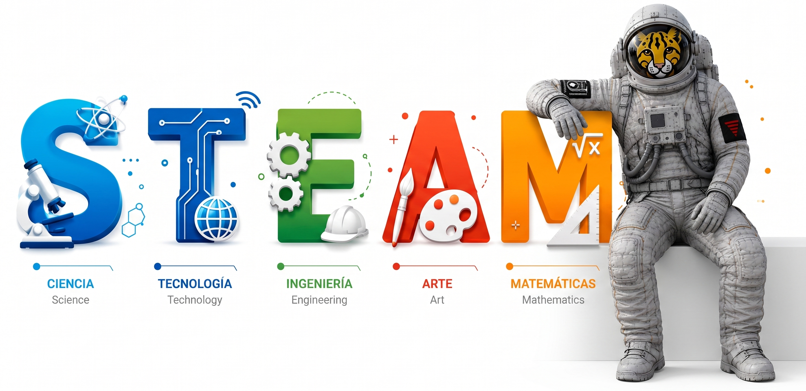
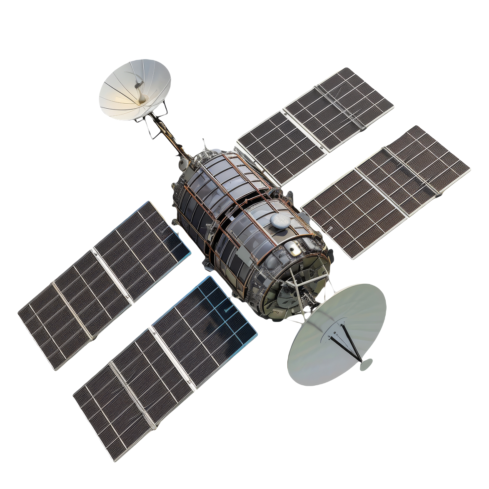

Ideacion
Equipos de 6 estudiantes eligen una mision y definen el problema que resolveran.





Hackatón Mars Challenge™
UNACH 2026
Mars Challenge™ es un programa internacional que usa el contexto de Marte (recursos limitados y condiciones extremas) para retar a jóvenes a diseñar soluciones que también se puedan aplicar en la Tierra.
Durante el hackatón trabajarás en el desafío oficial de esta edición. Los detalles se compartirán por la organización el día del evento.
EL RETO: Elemento Tierra
Diseñar un sistema vivo integrado donde diferentes formas de vida interactúen en equilibrio. La propuesta debe incluir al menos tres componentes biológicos conectados entre sí.
Comprender problemas reales de energia, agua, comunicacion, salud y movilidad marciana.
Convertir una idea en prototipo con sensores, software, materiales, IA o electronica.
Defender el proyecto ante jurado con evidencia, demostracion funcional e impacto esperado.
Participacion
Estudiantes de cualquier licenciatura de la UNACH. El Hackatón Reto Marte promueve el enfoque STEAM (Ciencia, Tecnología, Ingeniería, Arte y Matemáticas), donde la innovación surge del trabajo multidisciplinario. No importa tu carrera: si tienes creatividad, ideas y ganas de resolver desafíos reales, este reto es para ti.

Requisitos de participación
Presencial por equipos
Se permite usar herramientas digitales como apoyo, incluyendo inteligencia artificial, siempre que:

Ruta de lanzamiento
Equipos de 6 estudiantes eligen una mision y definen el problema que resolveran.
Construccion del prototipo, pruebas tecnicas, bitacora y primera presentacion corta.
Demostracion frente a condiciones simuladas: polvo, baja energia, retraso de comunicacion o recursos limitados.
Presentacion de 5 minutos, defensa con jurado y exhibicion abierta de proyectos.
Selección de tres finalistas.
Centro de control
Registra tu equipo y comienza el desafio. Completa la informacion requerida para formalizar tu participacion en el Reto Marte.